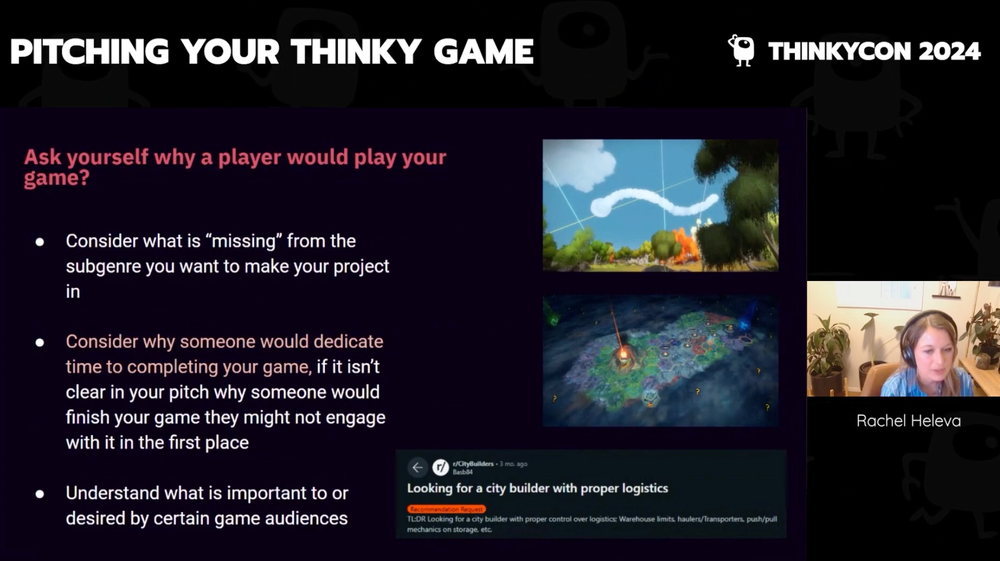

Pitching Your Thinky Game
ThinkyCon, April 2024
At Astra, I spent several years looking at thousands of games through the lens of a very specific design philosophy. We were interested in games that center reasoning, give players the information they need to make decisions, and reward a progressively deeper understanding of their systems. What made this interesting from a scouting perspective was that we weren't working within a single genre. We were looking for related qualities in puzzle games, deckbuilders, tactics games, programming games and management games, each with its own audience and commercial landscape.
I gave this talk at the first ThinkyCon to share some of what I had learned from that process. Rather than explain how to structure a pitch deck, I wanted to give developers a framework for thinking about their projects well before they approached a publisher.

What I took away from scouting across genres
A design philosophy can span genres, but the audiences for those games don't necessarily overlap. Understanding the differences between those audiences means looking at what players already enjoy, what they feel is missing, and what new kinds of interactions a game could offer them. Cobalt Core's combination of deckbuilding and tactics, and Against the Storm's use of a roguelike structure in a city builder, were examples I discussed of how familiar systems can be recombined to create something distinct.
I also learned how useful it is to test my assumptions about games against available market data. A game can be beloved in a community I know intimately without having reached a large commercial audience. Conversely, there are audiences for complex games that don't necessarily identify with the thinky label. In the Q&A, I talked about discovering that some players even approach Factorio as a cozy game.
Pitching as a design question
I don't think every game needs to be a commercial project. Exploring an unusual idea is a perfectly valid goal. But if a developer wants to secure funding or reach a particular audience, their design choices, scope and expectations should reflect that ambition.
When I evaluate a prototype, I'm less interested in how much content it contains than in whether it gives me an interesting choice to make or something meaningful to discover. I want to understand what a player gets to think through and how their understanding of the system might change as they play. Communicating that experience is often more interesting than simply describing the mechanics.
Watch the talk and Q&A · Why would a player play your game? (16:23)